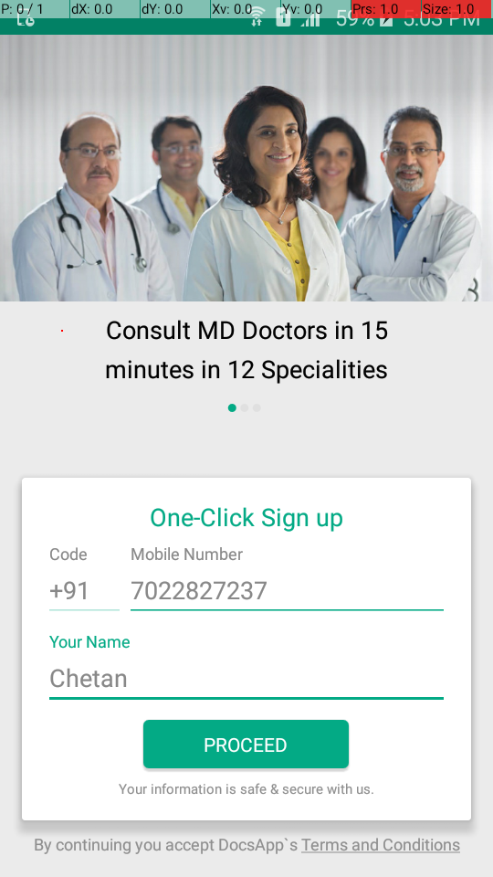
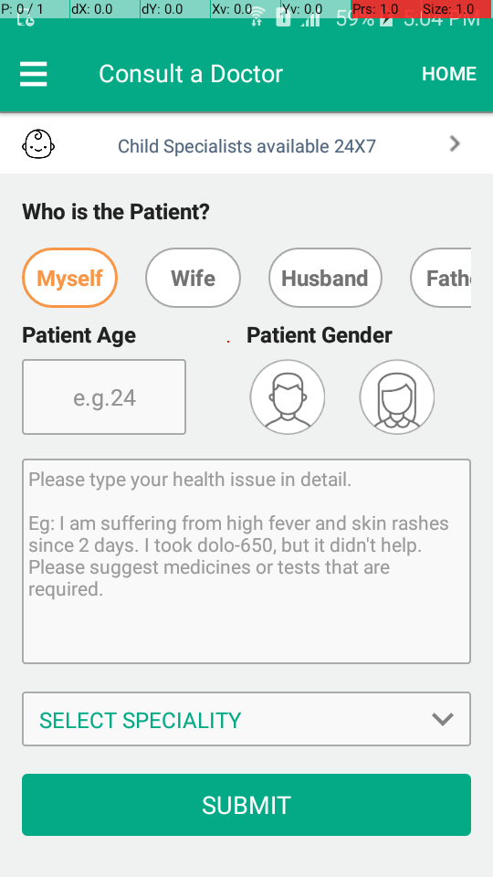
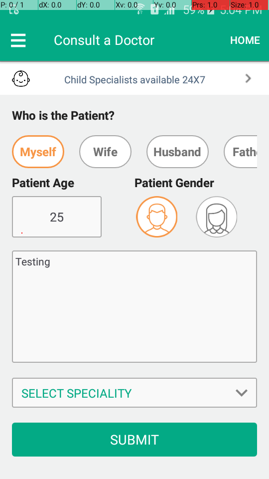

The following table lists down the Sequential Steps during the Run
TestCase Name: TC_2 : Iteration 1
Time Taken for Executing: 117 Sec
Current Run Number: Run 0 Method Type: Test Method
TestCase Name: TC_2 : Iteration 1
Time Taken for Executing: 117 Sec
Current Run Number: Run 0 Method Type: Test Method
Execution Platform Details
| O.S | : | Windows 10, amd64Bit, v10.0 |
| Java | : | 1.8.0_60 |
| Hostname | : | TYSS-MF-034 |
| Selenium | : | 2.53.1 |
Summary
| Status | : | Failed |
| Execution Date | : | 28-Nov-2017 05:04:37 |
| Browser | : | , |
Author Info
| Author Name | : | Unknown |
| Creation Date | : | Unknown |
| Version | : | Unknown |
| System User | : | Administrator |
| S.No | Step Description | Input Value | Expected Value | Actual Value | Time | Line No | Status | Screen shot |
|---|---|---|---|---|---|---|---|---|
| 1 | Tap on selectLanguageTxt | User Should be Tap on selectLanguageTxt | User is able tap onselectLanguageTxt | 37 Sec | 309 |  | ||
| 2 | Tap on proceedButton | User Should be Tap on proceedButton | User is able tap onproceedButton | 1 Sec | 309 | | ||
| 3 | Enter 7022827237 on mobNumTxtFld | User Should able Enter 7022827237 on mobNumTxtFld | User is able Enter 7022827237 on mobNumTxtFld | 11 Sec | 336 | | ||
| 4 | Verify mobNumTxtFldis displayed | mobNumTxtFldShould be displayed | mobNumTxtFld is displayed | 1 Sec | 352 | | ||
| 5 | Enter Chetan on unameTxtFld | User Should able Enter Chetan on unameTxtFld | User is able Enter Chetan on unameTxtFld | 10 Sec | 336 | | ||
| 6 | Verify unameTxtFldis displayed | unameTxtFldShould be displayed | unameTxtFld is displayed | 1 Sec | 352 | |  | |
| 7 | Tap on VerifyProceedBtn | User Should be Tap on VerifyProceedBtn | User is able tap onVerifyProceedBtn | 321 Milli Sec | 309 | | ||
| 8 | Tap on VerifyLaterBtn | User Should be Tap on VerifyLaterBtn | User is able tap onVerifyLaterBtn | 51 Sec | 309 | | ||
| 9 | Tap on HomeBtn | User Should be Tap on HomeBtn | User is able tap onHomeBtn | 2 Sec | 309 | | ||
| 10 | Tap on TalkToDoctorBtn | User Should be Tap on TalkToDoctorBtn | User is able tap onTalkToDoctorBtn | 1 Sec | 309 | | ||
| 11 | Verify ConsultADoctorPageis displayed | ConsultADoctorPageShould be displayed | ConsultADoctorPage is displayed | 1 Sec | 352 | |  | |
| 12 | Tap on PatientSelect | User Should be Tap on PatientSelect | User is able tap onPatientSelect | 3 Sec | 309 | | ||
| 13 | Enter 25 on AgeTxtFld | User Should able Enter 25 on AgeTxtFld | User is able Enter 25 on AgeTxtFld | 10 Sec | 336 | | ||
| 14 | Verify AgeTxtFldis displayed | AgeTxtFldShould be displayed | AgeTxtFld is displayed | 661 Milli Sec | 352 | | ||
| 15 | Tap on MaleGenderSelect | User Should be Tap on MaleGenderSelect | User is able tap onMaleGenderSelect | 3 Sec | 309 | | ||
| 16 | Enter Testing on QueryTxtFld | User Should able Enter Testing on QueryTxtFld | User is able Enter Testing on QueryTxtFld | 11 Sec | 336 | | ||
| 17 | Verify QueryTxtFldis displayed | QueryTxtFldShould be displayed | QueryTxtFld is displayed | 584 Milli Sec | 352 | |  | |
| 18 | Tap on SelectSpcialityBtn | User Should be Tap on SelectSpcialityBtn | User is able tap onSelectSpcialityBtn | 600 Milli Sec | 309 | |
{kind=link}
{kind=link}
{kind=link}
{kind=link}
{kind=link}
Parameters:
Param: SM-J200G
Reason for Failure: WebDriver Exception{app=D:\DocsApp\DocsApp-test-automation\DocsApp_com.docsapp.patients.apk, appPackage=com.docsapp.patients, networkConnectionEnabled=true, noReset=false, warnings={}, databaseEnabled=false, deviceName=420076ac967123f9, fullReset=false, platform=LINUX, deviceUDID=420076ac967123f9, appActivity=com.docsapp.patients.app.MainActivity, desired={app=D:\DocsApp\DocsApp-test-automation\DocsApp_com.docsapp.patients.apk, appPackage=com.docsapp.patients, noReset=false, deviceName=SM-J200G, fullReset=false, appActivity=com.docsapp.patients.app.MainActivity, newCommandTimeout=60000, platformVersion=5.1.1, automationName=Appium, autoGrantPermissions=true, platformName=Android, udid=420076ac967123f9, autoAcceptAlerts=true}, newCommandTimeout=60000, platformVersion=5.1.1, webStorageEnabled=false, locationContextEnabled=false, automationName=Appium, takesScreenshot=true, autoGrantPermissions=true, javascriptEnabled=true, platformName=Android, udid=420076ac967123f9, autoAcceptAlerts=true}] Session ID: 7f6403c7-9e1d-4ea1-9b0b-61c10fac590f *** Element info: {Using=id, value=
Click Me to Show/Hide the Full Stack Trace
Param: SM-J200G
Reason for Failure: WebDriver Exception{app=D:\DocsApp\DocsApp-test-automation\DocsApp_com.docsapp.patients.apk, appPackage=com.docsapp.patients, networkConnectionEnabled=true, noReset=false, warnings={}, databaseEnabled=false, deviceName=420076ac967123f9, fullReset=false, platform=LINUX, deviceUDID=420076ac967123f9, appActivity=com.docsapp.patients.app.MainActivity, desired={app=D:\DocsApp\DocsApp-test-automation\DocsApp_com.docsapp.patients.apk, appPackage=com.docsapp.patients, noReset=false, deviceName=SM-J200G, fullReset=false, appActivity=com.docsapp.patients.app.MainActivity, newCommandTimeout=60000, platformVersion=5.1.1, automationName=Appium, autoGrantPermissions=true, platformName=Android, udid=420076ac967123f9, autoAcceptAlerts=true}, newCommandTimeout=60000, platformVersion=5.1.1, webStorageEnabled=false, locationContextEnabled=false, automationName=Appium, takesScreenshot=true, autoGrantPermissions=true, javascriptEnabled=true, platformName=Android, udid=420076ac967123f9, autoAcceptAlerts=true}] Session ID: 7f6403c7-9e1d-4ea1-9b0b-61c10fac590f *** Element info: {Using=id, value=
Click Me to Show/Hide the Full Stack Trace
org.openqa.selenium.WebDriverException: An unknown server-side error occurred while processing the command. Original error: Must provide a selector when finding elements (WARNING: The server did not provide any stacktrace information)
Command duration or timeout: 24 milliseconds
Build info: version: '2.53.1', revision: 'a36b8b1cd5757287168e54b817830adce9b0158d', time: '2016-06-30 19:26:09'
System info: host: 'TYSS-MF-034', ip: '10.10.11.121', os.name: 'Windows 10', os.arch: 'amd64', os.version: '10.0', java.version: '1.8.0_60'
Driver info: io.appium.java_client.android.AndroidDriver
Capabilities [{app=D:\DocsApp\DocsApp-test-automation\DocsApp_com.docsapp.patients.apk, appPackage=com.docsapp.patients, networkConnectionEnabled=true, noReset=false, warnings={}, databaseEnabled=false, deviceName=420076ac967123f9, fullReset=false, platform=LINUX, deviceUDID=420076ac967123f9, appActivity=com.docsapp.patients.app.MainActivity, desired={app=D:\DocsApp\DocsApp-test-automation\DocsApp_com.docsapp.patients.apk, appPackage=com.docsapp.patients, noReset=false, deviceName=SM-J200G, fullReset=false, appActivity=com.docsapp.patients.app.MainActivity, newCommandTimeout=60000, platformVersion=5.1.1, automationName=Appium, autoGrantPermissions=true, platformName=Android, udid=420076ac967123f9, autoAcceptAlerts=true}, newCommandTimeout=60000, platformVersion=5.1.1, webStorageEnabled=false, locationContextEnabled=false, automationName=Appium, takesScreenshot=true, autoGrantPermissions=true, javascriptEnabled=true, platformName=Android, udid=420076ac967123f9, autoAcceptAlerts=true}]
Session ID: 7f6403c7-9e1d-4ea1-9b0b-61c10fac590f
*** Element info: {Using=id, value=}
at sun.reflect.NativeConstructorAccessorImpl.newInstance0(Native Method)
at sun.reflect.NativeConstructorAccessorImpl.newInstance(NativeConstructorAccessorImpl.java:62)
at sun.reflect.DelegatingConstructorAccessorImpl.newInstance(DelegatingConstructorAccessorImpl.java:45)
at java.lang.reflect.Constructor.newInstance(Constructor.java:422)
at org.openqa.selenium.remote.ErrorHandler.createThrowable(ErrorHandler.java:206)
at org.openqa.selenium.remote.ErrorHandler.throwIfResponseFailed(ErrorHandler.java:158)
at org.openqa.selenium.remote.RemoteWebDriver.execute(RemoteWebDriver.java:678)
at io.appium.java_client.DefaultGenericMobileDriver.execute(DefaultGenericMobileDriver.java:40)
at io.appium.java_client.AppiumDriver.execute(AppiumDriver.java:1)
at io.appium.java_client.android.AndroidDriver.execute(AndroidDriver.java:1)
at org.openqa.selenium.remote.RemoteWebDriver.findElement(RemoteWebDriver.java:363)
at io.appium.java_client.DefaultGenericMobileDriver.findElement(DefaultGenericMobileDriver.java:56)
at io.appium.java_client.AppiumDriver.findElement(AppiumDriver.java:1)
at io.appium.java_client.android.AndroidDriver.findElement(AndroidDriver.java:1)
at org.openqa.selenium.remote.RemoteWebDriver.findElementById(RemoteWebDriver.java:413)
at io.appium.java_client.DefaultGenericMobileDriver.findElementById(DefaultGenericMobileDriver.java:64)
at io.appium.java_client.AppiumDriver.findElementById(AppiumDriver.java:1)
at io.appium.java_client.android.AndroidDriver.findElementById(AndroidDriver.java:1)
at org.openqa.selenium.By$ById.findElement(By.java:218)
at org.openqa.selenium.remote.RemoteWebDriver.findElement(RemoteWebDriver.java:355)
at io.appium.java_client.DefaultGenericMobileDriver.findElement(DefaultGenericMobileDriver.java:52)
at io.appium.java_client.AppiumDriver.findElement(AppiumDriver.java:1)
at io.appium.java_client.android.AndroidDriver.findElement(AndroidDriver.java:1)
at com.cbt.docsapp.util.Execution_Android.getWebElement(Execution_Android.java:162)
at com.cbt.docsapp.util.Execution_Android.executeStep(Execution_Android.java:131)
at com.cbt.docsapp.util.Execution_Android.extractEachStep(Execution_Android.java:82)
at com.cbt.docsapp.util.Execution_Android.getTestStepInfo(Execution_Android.java:73)
at com.cbt.docsapp.util.ExecuteMapping_AndroidTestcases.executeAction(ExecuteMapping_AndroidTestcases.java:26)
at com.cbt.docsapp.android.tests.Module1.TC_2.TC_2(TC_2.java:19)
at sun.reflect.NativeMethodAccessorImpl.invoke0(Native Method)
at sun.reflect.NativeMethodAccessorImpl.invoke(NativeMethodAccessorImpl.java:62)
at sun.reflect.DelegatingMethodAccessorImpl.invoke(DelegatingMethodAccessorImpl.java:43)
at java.lang.reflect.Method.invoke(Method.java:497)
at org.testng.internal.MethodInvocationHelper.invokeMethod(MethodInvocationHelper.java:108)
at org.testng.internal.Invoker.invokeMethod(Invoker.java:669)
at org.testng.internal.Invoker.invokeTestMethod(Invoker.java:877)
at org.testng.internal.Invoker.invokeTestMethods(Invoker.java:1201)
at org.testng.internal.TestMethodWorker.invokeTestMethods(TestMethodWorker.java:125)
at org.testng.internal.TestMethodWorker.run(TestMethodWorker.java:109)
at org.testng.TestRunner.privateRun(TestRunner.java:776)
at org.testng.TestRunner.run(TestRunner.java:634)
at org.testng.SuiteRunner.runTest(SuiteRunner.java:425)
at org.testng.SuiteRunner.access$000(SuiteRunner.java:40)
at org.testng.SuiteRunner$SuiteWorker.run(SuiteRunner.java:459)
at org.testng.internal.thread.ThreadUtil$1.call(ThreadUtil.java:52)
at java.util.concurrent.FutureTask.run(FutureTask.java:266)
at java.util.concurrent.ThreadPoolExecutor.runWorker(ThreadPoolExecutor.java:1142)
at java.util.concurrent.ThreadPoolExecutor$Worker.run(ThreadPoolExecutor.java:617)
at java.lang.Thread.run(Thread.java:745)